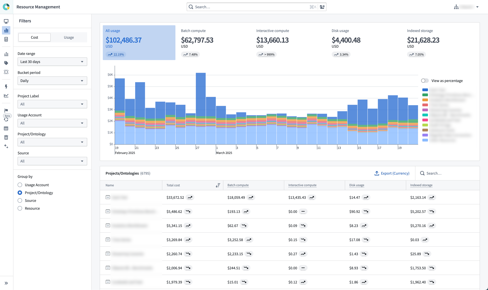

Analysis
Analyze usage, cost, and billing with the Analysis tab.

The Analysis tab in Resource Management gives users the opportunity to explore their usage data in more depth. Here, users can explore their usage by usage accounts, Project labels, Projects, Ontologies, sources, and more. Usage can be grouped together and explored in aggregate.
- Date range: The date range scopes the data displayed in the analysis to the specified date period. All dates and times are in UTC.
- Bucket period: How data is bucketed for display in the usage chart.
- Only complete buckets will be returned. Therefore, weekly or monthly bucket periods should only be used with aligned date ranges to ensure that the total usage values are correct.
- Data loading will be slower for daily bucket periods than for weekly or monthly bucket periods.
- Source: Specifying a source scopes the data displayed in the analysis to the specified source type. For example, if a user would like to see only usage coming from streaming, they could select Streaming.
- Filtering: Specifying a usage account, project label, Project, or Ontology scopes the data displayed in the analysis to that area of the data hierarchy.
- Group by: Specifying a grouping allows users to group the data presented in the analysis by the selected criteria.
All of these selection mechanisms work in tandem to refine an analysis to a user's desired set of data.